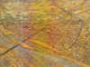
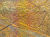
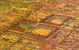
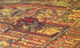
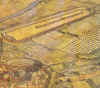
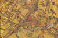
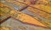

La ciudad de Emerita
Trama Urbana

Emerita plano general

Plano actual de Mérida

Foro provincial
Templo de Diana

Arco de Trajano

Circo - Anfiteatro - Teatro
Casa del anfiteatro

Casa del Mitreo
Necrópolis

Puentes y calzadas
Acueductos
HISTORIA
Menú
Hispania
Vida en Emérita
Casa del Anfiteatro
Foro de Emérita
Más de Emérita
Espectáculos y ocio
Teatro
Anfiteatro
Circo
Periferia e infraestructuras
El Agua; Acueductos y Pantanos
Extremadura Romana
Ciudades de Hispania